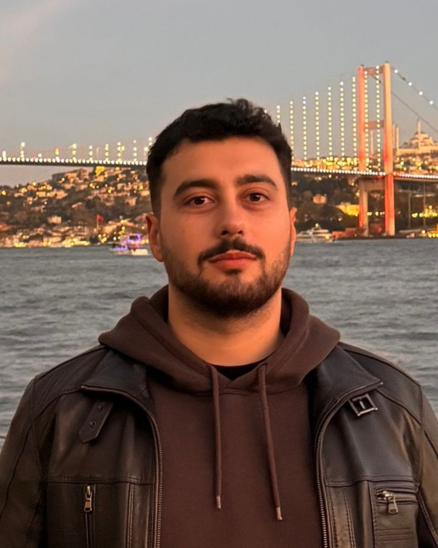

Merhaba! Ben Atahan Ata.
Full Stack .NET geliştirici adayıyım. Modern web teknolojileri ve yazılım geliştirme alanında kendimi sürekli geliştiriyorum.
Eğitim sürecim boyunca hem front-end hem de back-end alanlarında pek çok proje geliştirerek deneyim kazandım. C#, .NET, Entity Framework Core gibi teknolojilerle çalışıyorum ve modern yazılım geliştirme prensiplerini uyguluyorum.
Gerçekleştirdiğim staj ve proje deneyimleri sayesinde yazılım geliştirme sürecinin tüm aşamalarında (tasarım, geliştirme, test, deployment) tecrübe sahibiyim. S.O.L.I.D prensipleri, Clean Architecture ve Design Patterns gibi konularda bilgi sahibiyim.
Bu portfolyoda geliştirdiğim web uygulamalarını, masaüstü projelerimi, katıldığım teknoloji etkinliklerini ve kullandığım teknolojileri bulabilirsiniz. Amacım, teknoloji dünyasında sürekli öğrenmeye, üretmeye ve kendimi geliştirmeye devam etmek.